How to install and set up EMS, step by step, and how to use every feature: customers, savings, thrift, loans, transfers, field collections, approvals and reports.
Version 0.1 · September 2026 An Entacrest Nexus product
Contents
What’s in this guide
1What EMS doesOverview and who uses it
2Before you startWhat to have ready
3Install EMSStep by step
4Activate your licenceStep by step
5Set up your business and sign inStep by step
6Your first week: set-up checklistBranches, staff, products, settings
7Using EMS on several computersOffice network, Supabase, web
8Customers and accounts
9Deposits, withdrawals and charges
10Transfers between accounts
11Thrift (ajo/esusu) savings
12Field collections and remittance
13Loans
14Approvals
15Correcting mistakes: reversals and edits
16Reports and the audit log
17Practising with the demo workspace
18Backups
19Troubleshooting
20Roles at a glance
Chapter 1
What EMS does
EMS runs the day-to-day work of a microfinance bank, cooperative or thrift society, from the counter to the field to the MD’s desk.
Area
What you can do
Customers and accounts
Register customers with their ID, photo and next of kin. Open savings, target savings, thrift and loan accounts. Print statements.
Counter
Post deposits and withdrawals, with automatic withdrawal charges. Large withdrawals wait for a manager’s approval.
Transfers
Move money between a customer’s own accounts, or to another customer. Paying into a loan counts as a repayment.
Thrift
Daily, weekly or monthly contribution plans with commission, cycles and payouts.
Field app
Account officers collect money in the market on a phone, even offline, and close their day. The accountant counts their cash.
Loans
Loan products with monthly or overall interest, processing fees and daily late fees. Applications, approval, payout, repayment schedules, top-ups and extensions.
Control
Approvals for sensitive actions, reversals, edits by senior staff only, and a full audit log of who did what.
Reports
Staff and branch performance, income, loan portfolio, defaulters, dormant accounts and more, exported to PDF or CSV.
Who uses EMS
Everyone signs in with their own email and password, plus a 6-digit code sent to their phone. What each person sees depends on their role and the permissions the MD gives them. See Chapter 20 for a summary.
Two ways to use it
Desktop app (Windows). Install it on your office computer. This guide mostly describes the desktop app.
Web. Your organisation can also host EMS online and staff open it in a browser. The screens are the same.
Chapter 2
Before you start
Have these ready. The whole set-up takes about 15 minutes.
A Windows 10 or 11 computer for the head office. It will hold your data, so use a reliable machine.
The installer file, EMS-Setup-0.1.0.exe, from Entacrest.
Your licence code from Entacrest. It is a long block of text starting with EMS-. Your licence sets how many branches you can run and when it must be renewed.
Your business details: name, head office address, phone number.
The MD’s details: name, work email, mobile number and a strong password (at least 8 characters with a capital letter, a lowercase letter and a number).
Your branch list, each with a two-digit code (01, 02…) and the market areas officers collect from.
Your staff list: names, emails, mobile numbers, roles and branches.
Want to look around first?The desktop app includes a demo workspace full of sample data, separate from your real data. See Chapter 17.
Chapter 3 · Step by step
Install EMS
Copy EMS-Setup-0.1.0.exe to the computer and double-click it.
If Windows shows Windows protected your PC, click More info, then Run anyway. This appears because the app is new to Windows. It is safe.
Follow the installer. Keep the suggested folder unless you have a reason to change it, then click Install.
When it finishes, EMS opens. Next time, open it from the EMS shortcut on the desktop or the Start menu.
Where your data livesBy default EMS keeps its database on this computer, in %APPDATA%\EMS\data. Back it up regularly (Chapter 18). To use EMS on several computers, see Chapter 7.
Chapter 4 · Step by step
Activate your licence
The first screen asks for your licence. Only the head office computer needs one. Staff on other computers connect to it instead (Chapter 7).
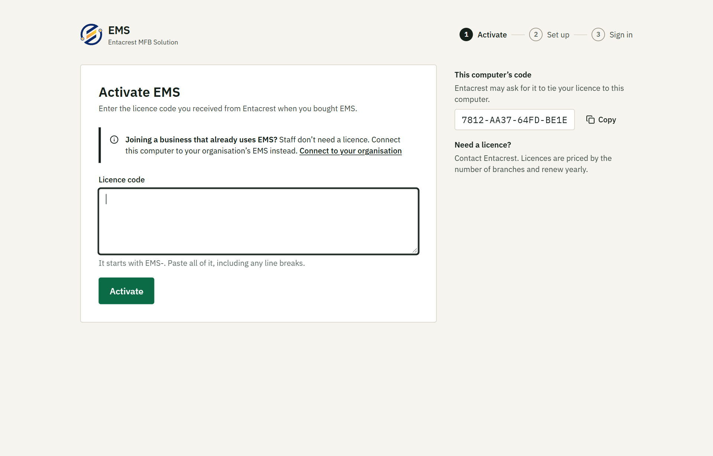
The Activate screen. “This computer’s code” is on the right.
Open the licence code Entacrest sent you. Copy all of it, from EMS- to the end, including any line breaks.
Paste it into the Licence code box.
Click Activate.
Entacrest asked for “this computer’s code”?Click Copy next to it and send it to them. Some licences are tied to one computer.
Staff installing on their own computer?Don’t enter a licence. Click Connect to your organisation in the grey box instead (Chapter 7).
Chapter 5 · Step by step
Set up your business and sign in
A. Create the business and the MD’s account
Under The business, enter the business name (printed on reports and receipts), head office address and phone. Email is optional.
Under Managing director’s account, enter the MD’s first and last name, work email and mobile number. Sign-in codes go to this number.
Choose a password and type it again. The ticks turn green when it is strong enough.
Click Finish set-up.
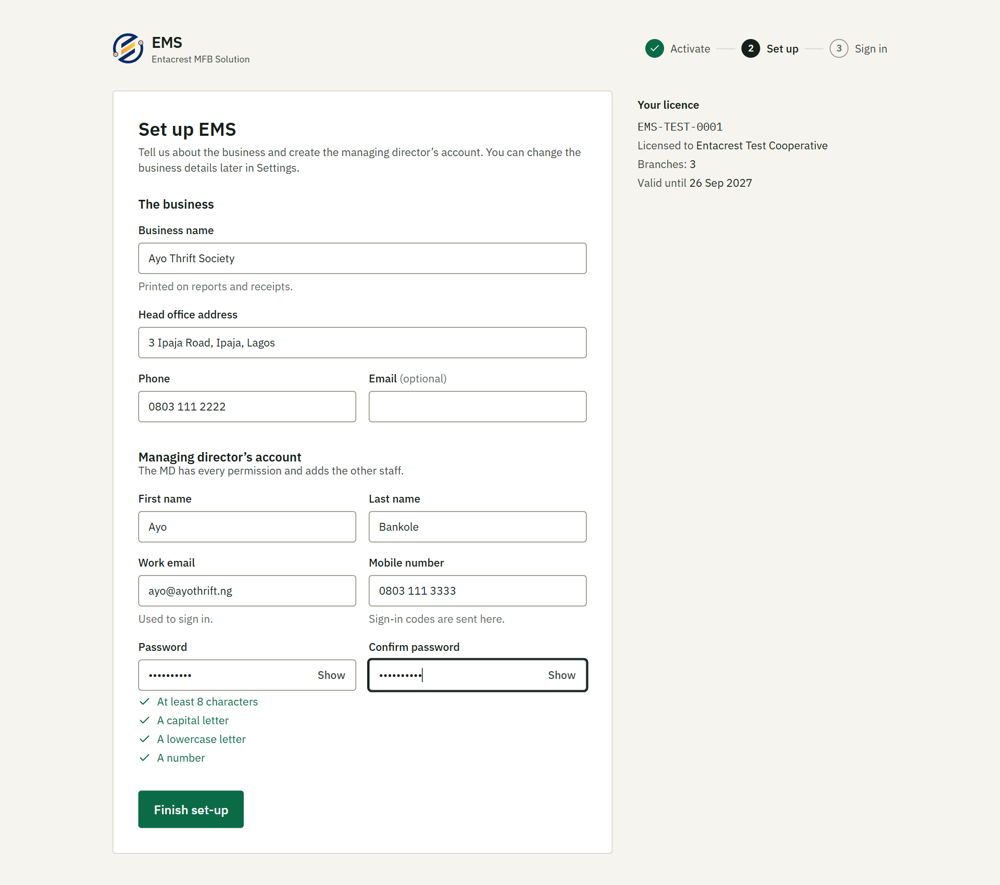
Set up EMS. You can change the business details later in Settings.
B. Sign in for the first time
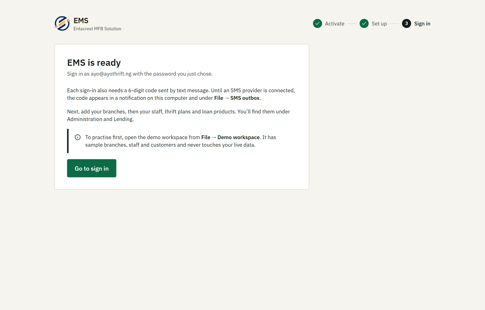
Set-up complete.
Click Go to sign in.
Enter the MD’s work email and password, then press Enter.
EMS asks for a 6-digit code sent by SMS. Until you connect an SMS provider, the code is not texted. Open File → SMS outbox (or press Ctrl+3) to see it.
Type the code and press Enter. The code expires after 5 minutes.
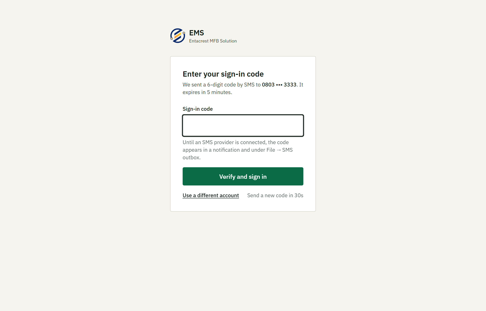
Enter the sign-in code.
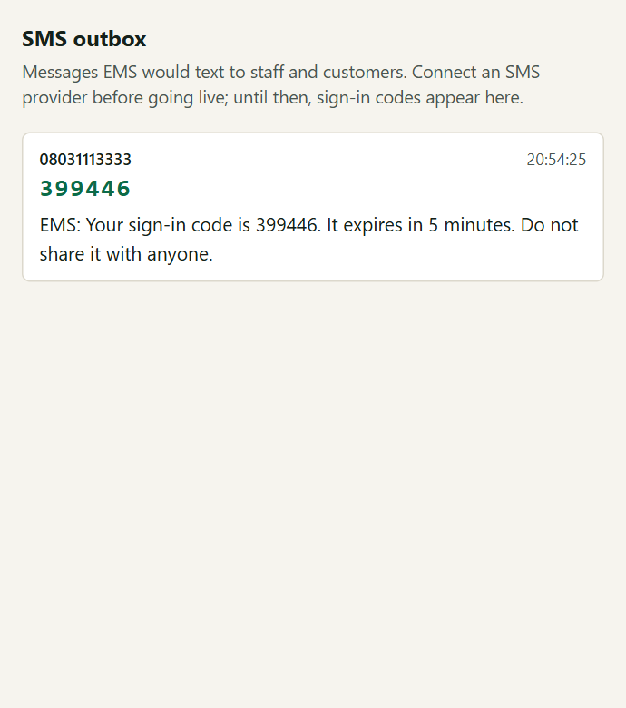
File → SMS outbox shows messages until SMS is connected.
Before you go live, connect SMSCustomers get receipts, and staff get sign-in codes, by SMS. Ask Entacrest to connect Termii or Africa’s Talking for you. Until then, only this computer can see the outbox.
Chapter 6 · Step by step
Your first week: set-up checklist
Do these in order. The MD (or an administrator) can do all of them.
Step 1 · Add your branches
A Headquarters branch (code 00) already exists. It is where the MD and general manager sit.
Go to Administration → Branches and click Add branch.
Enter the branch name, a two-digit code, address and phone. The code starts every account number in the branch, so it can’t change once accounts exist.
Add each collection area (e.g. Ipaja Market) and click Add area. Officers and customers are grouped by area.
Leave the manager as No manager yet for now. Pick them after you add staff.
Click Add branch. Your licence limits how many branches you can add.
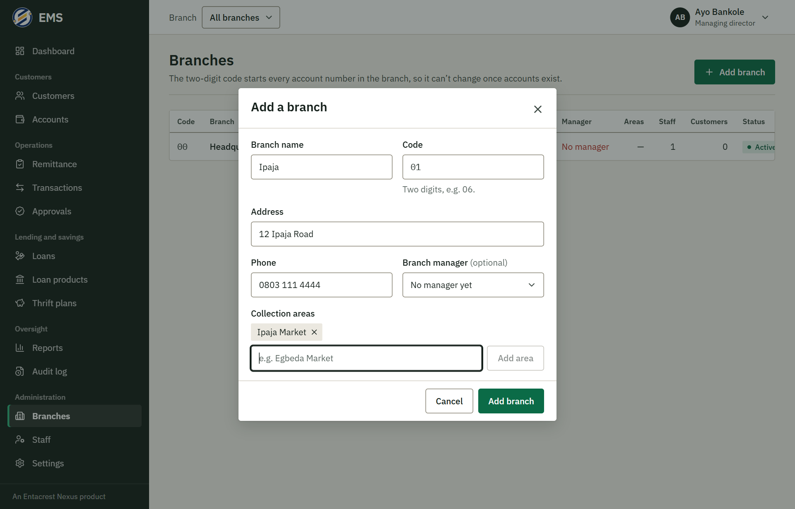
Adding a branch with its collection areas.
Step 2 · Add your staff
Go to Administration → Staff and click Add staff member.
Enter their name, work email (they sign in with it) and mobile number (their codes go there).
Choose their Role and Branch.
Under Permissions, tick what this person may do. The list only shows what their role allows. Use Select all or Clear for speed.
Click Add staff member. EMS shows a temporary password, such as Mango-River-4821. Give it to them privately.
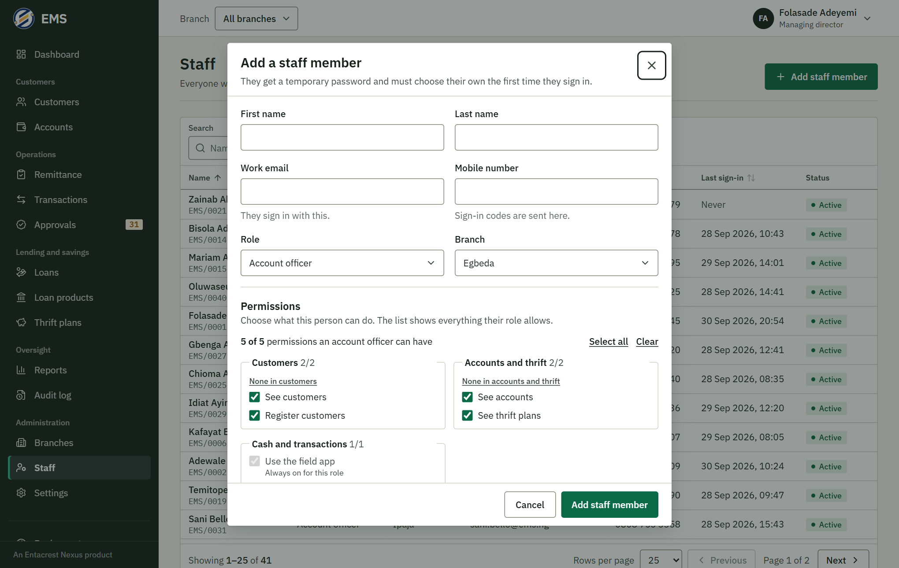
Adding a staff member and choosing their permissions.
Temporary passwords expire after 72 hoursThe staff member must sign in and choose their own password within 3 days. If they miss it, open their record in Staff and reset the password to get a new one.
Then go back to Branches and choose each branch’s manager.
Step 3 · Create your products
Thrift plans
Lending and savings → Thrift plans. For each plan, set the contribution amount and how often it is paid (daily, weekly, monthly), the cycle length, the commission EMS takes, and whether customers may withdraw before the cycle ends.
Loan products
Lending and savings → Loan products. For each product, set:
Interest: a rate per month or for the whole loan (overall).
Processing fee: a percentage of the loan, a flat amount, or none.
Late payment fee: a percentage or a flat amount, charged daily on overdue instalments.
The amount range, tenor and repayment frequency, and whether it needs guarantors or collateral.
Step 4 · Check your settings
Go to Administration → Settings. Every change is recorded in the audit log.
Tab
What to set
Business details
Name, address and phone shown on reports and receipts.
Working days and holidays
Days you open, and public holidays. Repayment dates skip days you are closed.
Limits
Amounts above which withdrawals and transfers need a manager’s approval, and other limits.
Transaction charges
Withdrawal charges for savings and target savings (see below).
Account numbers
How account numbers are formed.
SMS messages
The wording of texts customers receive.
What each role allows
The most any person in each role may be given.
Transaction charges
Charge customers when they withdraw from a savings or target savings account.
Open the Transaction charges tab.
For each account type, pick No charge, Percentage of the amount (with an optional At most cap) or a flat amount.
Check the example under the fields, then click Save charges.
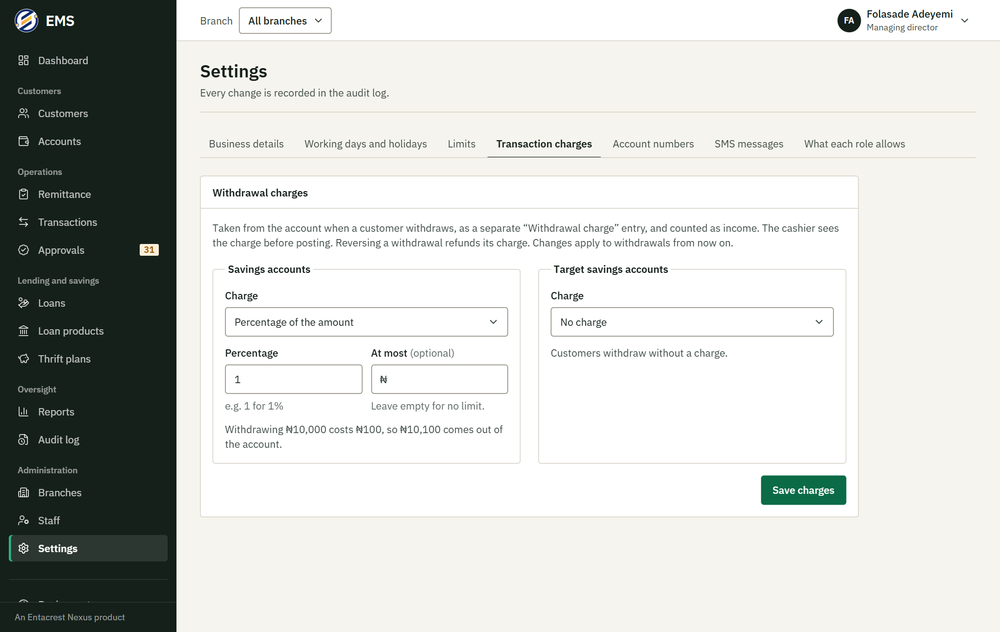
A 1% charge on savings withdrawals: withdrawing ₦10,000 takes ₦10,100 from the account.
The charge appears on the statement as a separate Withdrawal charge entry and counts as income. If a withdrawal is reversed, its charge is refunded. New charges apply to withdrawals from then on.
Chapter 7
Using EMS on several computers
All staff must work on the same data. Choose one of these set-ups. Only the head office computer needs a licence.
Option A · One office, shared over the office network
Best when everyone is in the same building on the same Wi-Fi or network.
On the head office computer (the one with the licence):
Open File → Share on office network and turn it on.
Open File → Office network address… and write down the address shown (for example http://192.168.1.20:47821).
If Windows Firewall asks, allow EMS on private networks.
Keep this computer switched on while staff work.
On each staff computer:
Install EMS (Chapter 3).
On the Activate screen, click Connect to your organisation. Do not enter a licence.
Choose On my organisation’s EMS server, enter the address from above and click Test connection.
Click Save and restart EMS, then sign in with your own email and password.
Option B · Several branches, using Supabase (online database)
Best when branches are in different places. Every computer connects to the same online database.
Create a free project at supabase.com. Choose a database password using letters and numbers only, and keep it safe.
In Supabase, click Connect, choose Session pooler and copy the connection string. Replace [YOUR-PASSWORD] with your database password (not your Supabase account password).
In EMS on the head office computer, open File → Connection settings… and choose In a Supabase (PostgreSQL) database.
Paste the string and click Test connection. To move your existing data, tick the option to copy this computer’s data into the new (empty) database.
Click Save and restart EMS. The first start creates the tables and can take a minute.
Keep the connection string secretIt contains your database password. Anyone who has it can read your data. If it is ever shared by mistake, reset the database password in Supabase.
Only one EMS server may use a database at a time.For many branches, the simplest set-up is to host EMS online (Option C) and let everyone connect to it.
Option C · Hosted online (web)
Entacrest can host EMS on the internet (for example on Render) with your Supabase database. Staff then open it in a browser, or connect the desktop app to it with On my organisation’s EMS server and the web address.
Chapter 8
Customers and accounts
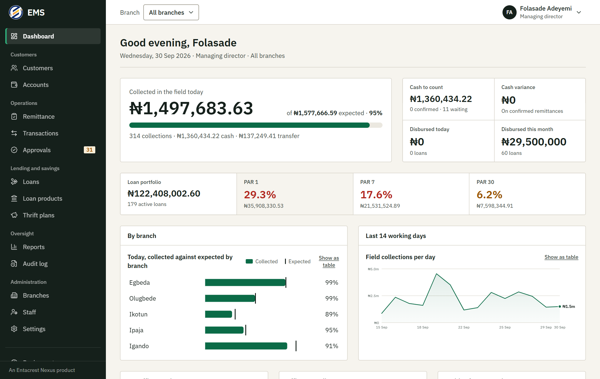
The Dashboard: today’s collections, deposits, loans and income at a glance. Use the Branch picker at the top to switch branches.
Register a customer
Go to Customers and click Add customer. (Officers can also register customers in the field app.)
Enter their details: name, phone, address, area, ID (e.g. NIN or BVN), photo and next of kin.
Save. New customers may need a manager’s approval before accounts are opened, depending on your set-up.
Open an account
On the customer’s page, click Open account and choose Savings, Target savings or Thrift (choose the thrift plan).
The account number is created automatically. It starts with the branch code.
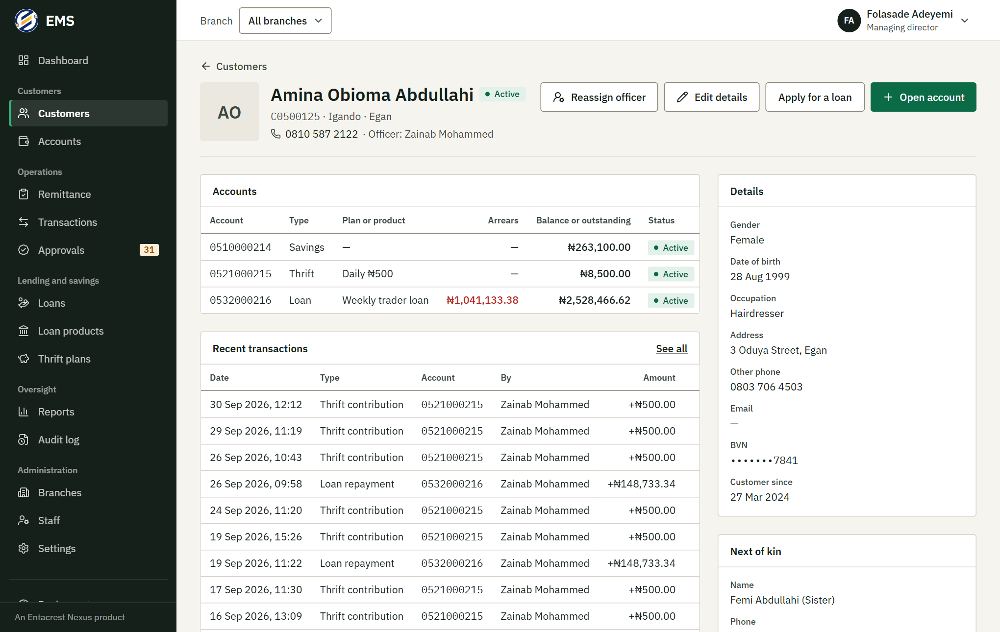
A customer’s page lists their accounts, loans and history.
Account page
Open any account to see its balance and statement. From here you can:
Post transaction: deposit or withdraw at the counter (Chapter 9).
Transfer: move money to another account (Chapter 10).
Export statement PDF or CSV: choose dates first.
Freeze the account, or Request closure (closure needs approval).
Chapter 9
Deposits, withdrawals and charges
For customers who come to the counter. Money collected in the market is recorded in the field app instead (Chapter 12).
Open the customer’s account and click Post transaction. (Or use Operations → Transactions → Post transaction and search for the account.)
Choose Deposit or Withdrawal.
Enter the amount and choose Cash or Transfer. Add a note if useful.
For withdrawals, check the charge EMS shows before posting.
Click Post deposit or Post withdrawal. The customer gets an SMS receipt.
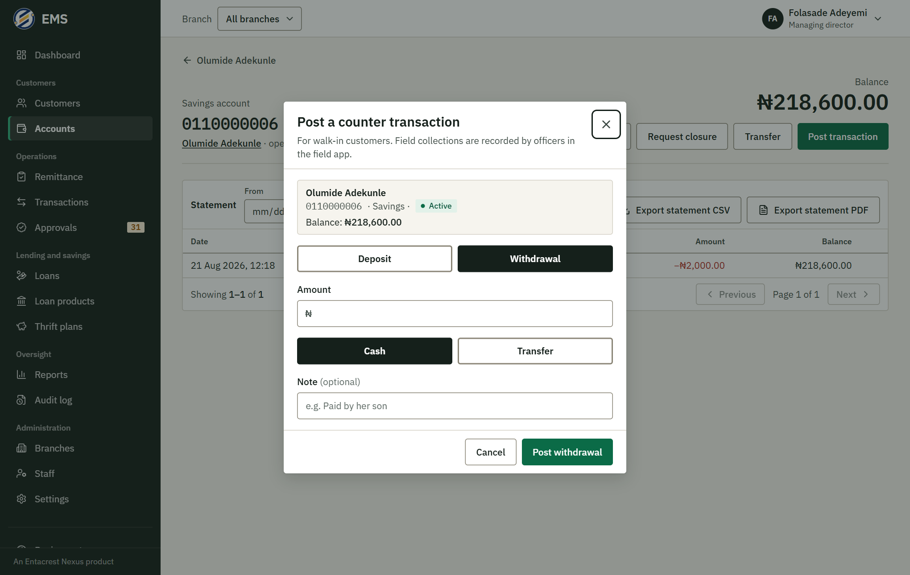
Posting a withdrawal at the counter.
Large withdrawalsIf the amount is above the limit in Settings, it is not paid immediately. It goes to Approvals and is paid when a manager approves (Chapter 14).
EMS won’t let an account go below zero, including the charge.
Chapter 10
Transfers between accounts
Move money without cash changing hands: between a customer’s own accounts, or from one customer to another.
Open the account the money comes from and click Transfer. (Or use Transfer on the Transactions page.)
Choose Customer’s other account and pick it from the list, or choose Another customer and type their account number. EMS shows their name so you can check it’s the right person.
Enter the amount and a note (e.g. “Rent for October”).
Click Transfer.
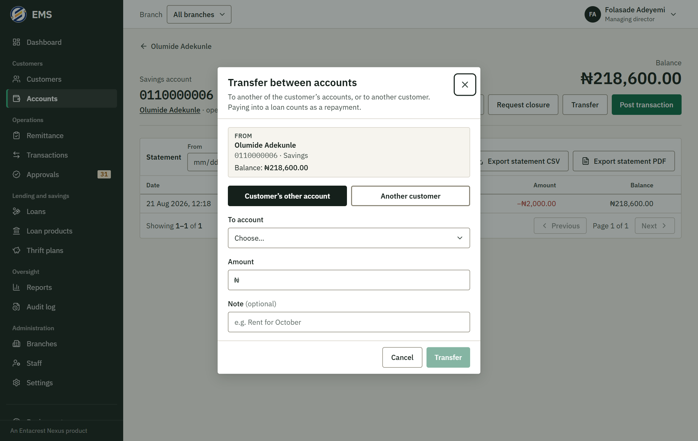
Transfer between accounts.
Both sides appear on their statements: Transfer out and Transfer in.
Transferring into a loan account is recorded as a loan repayment. You can’t pay more than the loan still owes.
Transfers above the limit go to Approvals first.
Frozen or closed accounts can’t send or receive.
Reversing a transfer reverses both sides together.
Chapter 11
Thrift (ajo/esusu) savings
Customers on a thrift plan contribute a fixed amount on a schedule, usually collected by an officer in the field. EMS takes the plan’s commission each cycle.
Withdrawing from a thrift account
Open the thrift account and click Post transaction, then Withdrawal.
Cycle complete: withdrawing the full balance is recorded as a thrift payout, the customer gets an SMS, and a new cycle starts.
Cycle not complete: allowed only if the plan permits early withdrawals. Otherwise EMS explains that the plan doesn’t allow withdrawals before the cycle ends.
Thrift withdrawals have no transaction charge. Large ones still need approval.
Chapter 12
Field collections and remittance
For account officers: the field app
Officers use a phone. In the desktop app it opens from File → Field app; online, it is the /field page of your EMS address.
Sign in with email, password and the SMS code.
The first time, choose a 6-digit PIN and type it again. Afterwards, the PIN is all you need to open the app.
Today lists the customers to visit, grouped by area, with what each should pay and any arrears.
Tap a customer (or use Collect), enter the amount and save. The customer gets an SMS.
No network? Keep collecting. Entries are saved on the phone and sent when the network returns. The top badge shows All synced when everything is sent.
At the end of the day, open End of day, check the totals and submit. Then hand the cash to the accountant.
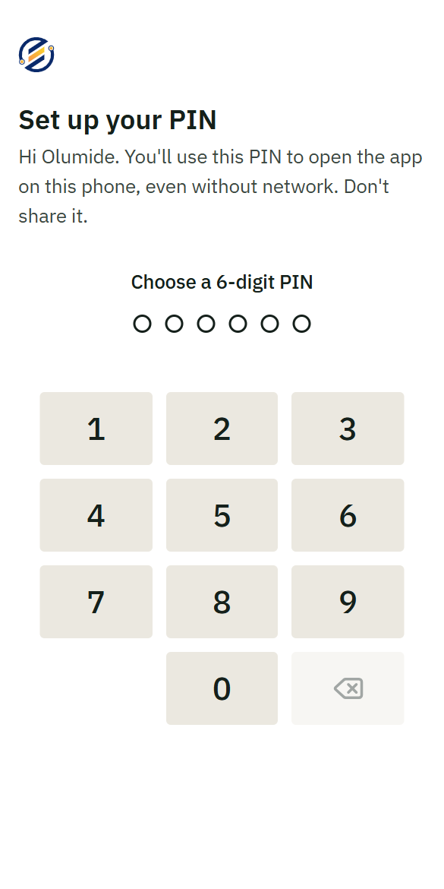
Setting up your 6-digit PIN.
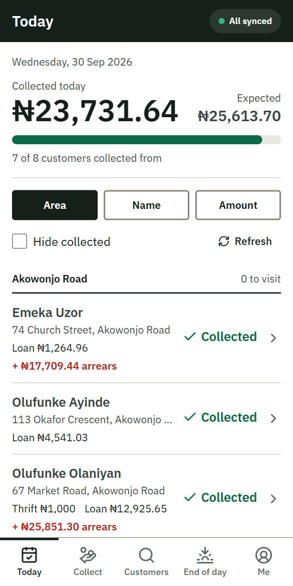
Today: customers to visit and what’s been collected.
For the accountant: remittance
Go to Operations → Remittance and pick the date.
Each officer shows the cash they are expected to hand in. Transfers are listed but not counted.
Count the officer’s cash and click Count cash. Enter what you counted.
EMS shows any variance (shortage or excess). Confirm it.
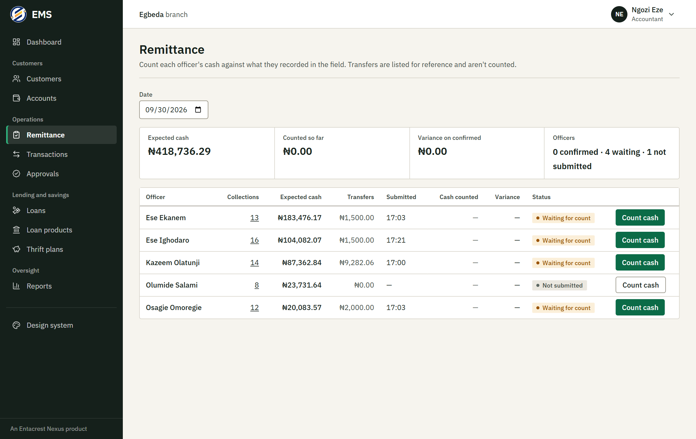
Remittance: counting each officer’s cash.
Chapter 13
Loans
The life of a loan
Apply. Open the customer’s page and click Apply for a loan. Choose the product, amount, tenor and purpose. Add guarantors or collateral if the product needs them. EMS shows the repayment schedule before you submit.
Approve. The application goes to Approvals. A manager approves or rejects it (Chapter 14).
Pay out. Open the loan under Lending and savings → Loans and click Pay out loan. The processing fee is taken as set on the product. For buy-now-pay-later products, use Pay supplier instead.
Repay. Repayments come from field collections, the counter, or transfers from the customer’s savings. Each repayment settles the oldest instalment first.
Late fees. Overdue instalments attract the product’s daily late fee. It shows as Penalty.
Changes. Use Request extension to give more time (needs approval), or Top up loan to lend more.
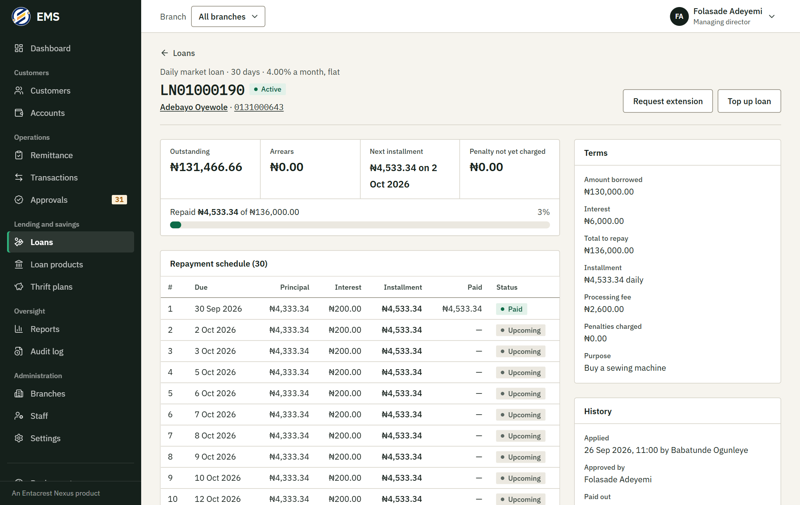
A loan: outstanding balance, arrears, repayment schedule and terms.
Chapter 14
Approvals
Sensitive actions need a second person. The number next to Approvals in the menu shows how many are waiting.
These go to approval: new customer registrations, loan applications, loan extensions, large withdrawals, large transfers, reversals and account closures.
Go to Operations → Approvals.
Open a request and read the details and the reason given.
Click Approve or Reject, with a note if needed. Nothing changes until it is approved.
You can’t approve your own request.Someone else with approval permission must do it.
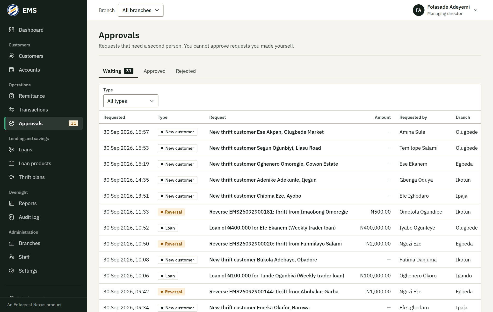
Approvals waiting for a decision.
Chapter 15
Correcting mistakes
Reverse a transaction
Use this when a transaction should never have happened (wrong customer, duplicate).
Open the transaction (from Transactions or a statement) and click Request reversal.
Explain why. Be specific: the approving manager reads it.
A manager approves it. The money goes back, charges are refunded, and both sides of a transfer are reversed.
Edit a transaction
Use this when a transaction was real but recorded wrongly (wrong amount, date, payment method or note). Only the MD, general managers and branch managers can edit. Branch managers can edit their own branch only.
Open the transaction and click Edit.
Change the amount, date and time, Cash/Transfer or note.
In Why is it being changed?, give a clear reason, e.g. “Officer entered ₦5,000 instead of ₦500”.
Click Save changes.
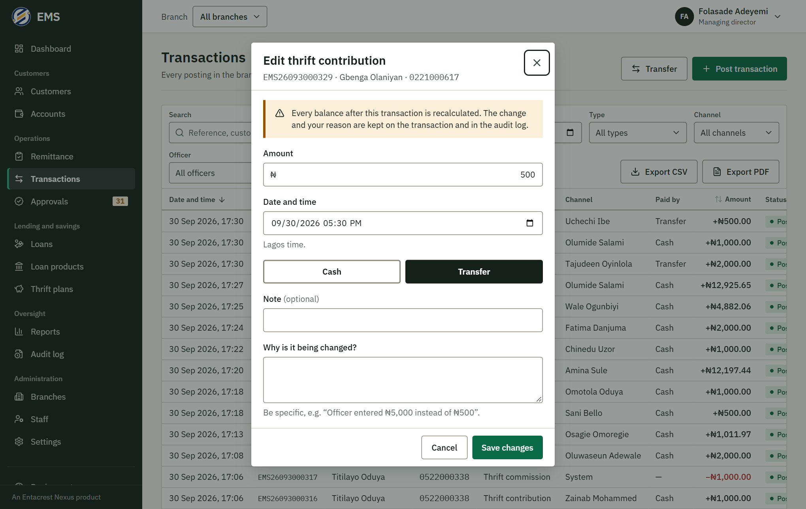
Editing a transaction.
Every balance after it is recalculated. Editing a loan repayment updates what the loan still owes.
The transaction is tagged Edited and shows a Changes history. The edit is also in the audit log.
EMS refuses edits that would leave an account short, dates in the future, or amounts on loan payouts (only their date and note can change).
Chapter 16
Reports and the audit log
Go to Oversight → Reports, choose a report, set the dates and branch, then view it or export it to PDF or CSV.
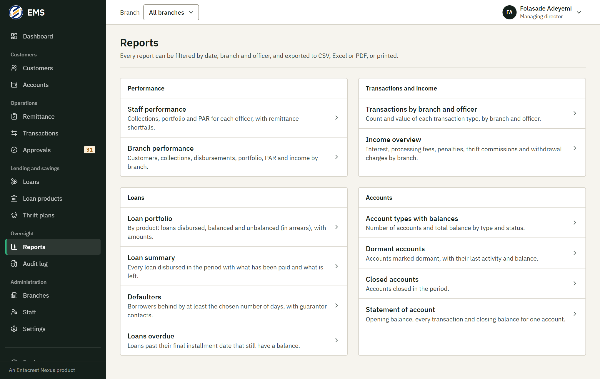
The Reports page.
Report
Shows
Staff performance
What each officer collected against target.
Branch performance
Branches compared.
Transactions by branch and officer
Every posting, grouped.
Income overview
Interest, fees, penalties, thrift commission and withdrawal charges.
Loan portfolio / Loan summary
Money out, repaid and outstanding.
Defaulters / Loans overdue
Who is behind and by how much.
Account types with balances
Total held in each account type.
Dormant accounts / Closed accounts
Accounts with no recent activity, or closed.
Statement of account
One account’s statement for any period.
Audit log
Oversight → Audit log records who did what and when: sign-ins, postings, approvals, edits and settings changes. Nobody can delete entries.
Chapter 17
Practising with the demo workspace
The desktop app includes a demo workspace with sample branches, staff, customers and loans. It is completely separate from your real data, so it is ideal for training new staff.
Open File → Demo workspace → Demo back office (or Demo field app).
Sign in with any demo staff email, e.g. md@ems.ng, manager@ems.ng, cashier@ems.ng, accountant@ems.ng or officer@ems.ng.
Password: Demo@2026. Sign-in code: 123456.
To start again with fresh sample data, use File → Demo workspace → Reset demo data…
Chapter 18
Backups
If your data is on this computer, back it up at least weekly, ideally daily.
Open File → Back up live data…
Choose where to save it: a USB drive, or a Google Drive / OneDrive folder.
Keep several copies from different dates.
Don’t run EMS from a cloud folderGoogle Drive and OneDrive are fine for storing backup copies, but EMS’s live database must not be kept in them. To share data between computers, use Chapter 7.
If you use Supabase, it keeps its own backups. File → Open data folder shows where local data is kept.
Chapter 19
Troubleshooting
Problem
What to do
I didn’t get my sign-in code
If SMS isn’t connected yet, the code is in File → SMS outbox on the head office computer. Codes expire after 5 minutes; sign in again for a new one. Check the mobile number on your staff record.
I forgot my password
Ask the MD or general manager to reset it in Staff. You’ll get a new temporary password.
My temporary password doesn’t work
It expires after 72 hours. Ask for it to be reset.
A new computer shows the licence screen
Staff computers don’t need a licence. Click Connect to your organisation (Chapter 7).
“Can’t reach the server” on a staff computer
Check the head office computer is on, EMS is open and File → Share on office network is on, and both computers are on the same network. Check the address has not changed.
“Another EMS server is using this database”
Only one EMS server may use a Supabase database. Close EMS on the other computer, or connect that computer to the organisation’s server instead.
Stuck on “Checking the connection…”
Use the Session pooler string from Supabase (port 5432), with your database password, not your account password.
The licence has expired
Contact Entacrest to renew. Help → Licence details shows the expiry date.
A withdrawal or transfer didn’t go through
If it was large, it is waiting in Approvals. If the account is frozen, closed or short of funds, EMS says so.
I can’t see a menu or button
Your role or permissions don’t include it. Ask the MD.
Windows says “Windows protected your PC”
Click More info → Run anyway.
Still stuck? Contact Entacrest support, and include a screenshot of the message you see.
Chapter 20
Roles at a glance
These are typical. The MD chooses each person’s exact permissions when adding them, within what their role allows.
Role
Usually does
Edit transactions
Managing director (MD)
Everything, across all branches. Sets up the business, staff and settings.
Yes
General manager
Runs all branches: approvals, reports, staff.
Yes
Branch manager
Runs one branch: takes and approves loan applications, approves requests and reversals; reviews reports.
Own branch
Administrator
Branches, staff and settings.
No
Accountant
Remittance, cash counts, reports.
No
Cashier
Counter deposits, withdrawals and transfers; pays out approved loans; requests reversals.
No
Account officer
Registers customers, collects in the field app and follows up loans.
No
Good practiceGive each person only what their job needs. Everyone signs in as themselves, and never shares passwords or PINs, so the audit log shows who did what.